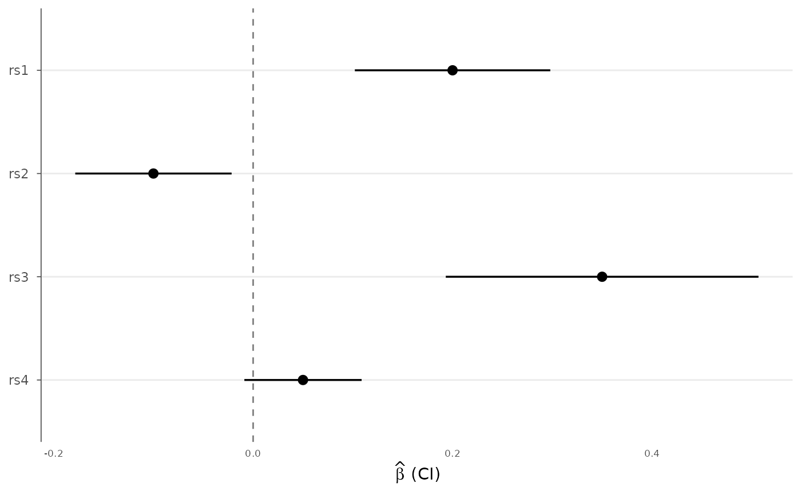
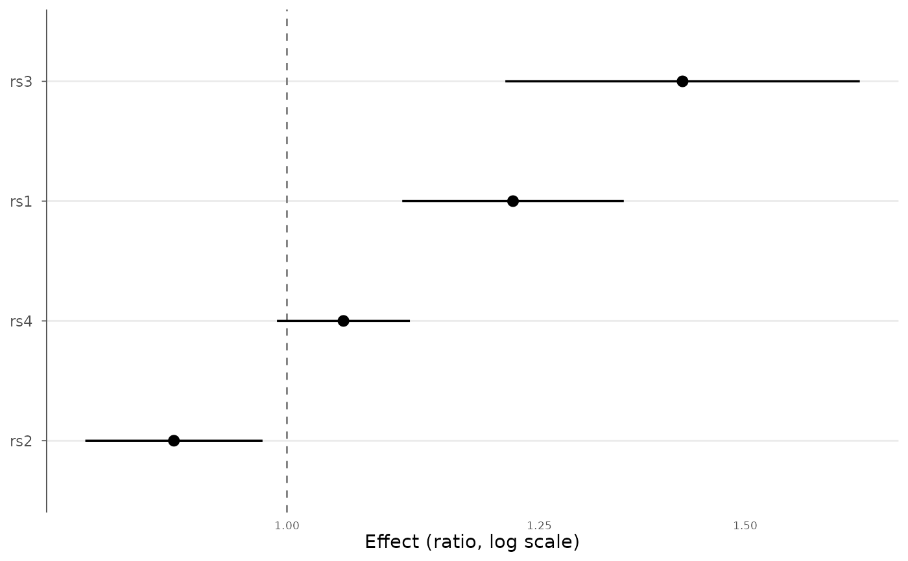

Draw a forest plot of effect estimates with confidence intervals, for example to compare a variant across cohorts, several lead variants from one study, or meta-analysis inputs. Estimates and standard errors are turned into confidence intervals; optionally the effects are exponentiated to display odds or hazard ratios.
Usage
forest_plot(
data,
effect = "BETA",
se = "SE",
label = NULL,
group = NULL,
ci = 0.95,
exponentiate = FALSE,
ref_line = if (exponentiate) 1 else 0,
order_by = c("none", "effect", "label"),
colors = NULL,
point_size = 2.5,
x_label = NULL,
title = NULL
)Arguments
- data
A data.frame (or
gwas_data) with effect and standard-error columns.- effect, se
Column names for the effect estimate and its standard error.
- label
Column used for the row labels. Defaults to
SNPwhen present, otherwise the row index.- group
Optional grouping column (e.g. cohort); groups are colored and offset within each label.
- ci
Confidence level for the intervals (default 0.95).
- exponentiate
If TRUE, plot
exp(effect)on a log axis (odds/hazard ratios) and default the reference line to 1.- ref_line
Position of the vertical reference line.
- order_by
Order rows by
"none","effect", or"label".- colors
Optional colors for groups.
- point_size
Point size.
- x_label
Optional x-axis label.
- title
Plot title.
Examples
df <- data.frame(
SNP = c("rs1", "rs2", "rs3", "rs4"),
BETA = c(0.20, -0.10, 0.35, 0.05),
SE = c(0.05, 0.04, 0.08, 0.03)
)
forest_plot(df)

# Odds ratios, ordered by effect
forest_plot(df, exponentiate = TRUE, order_by = "effect")
